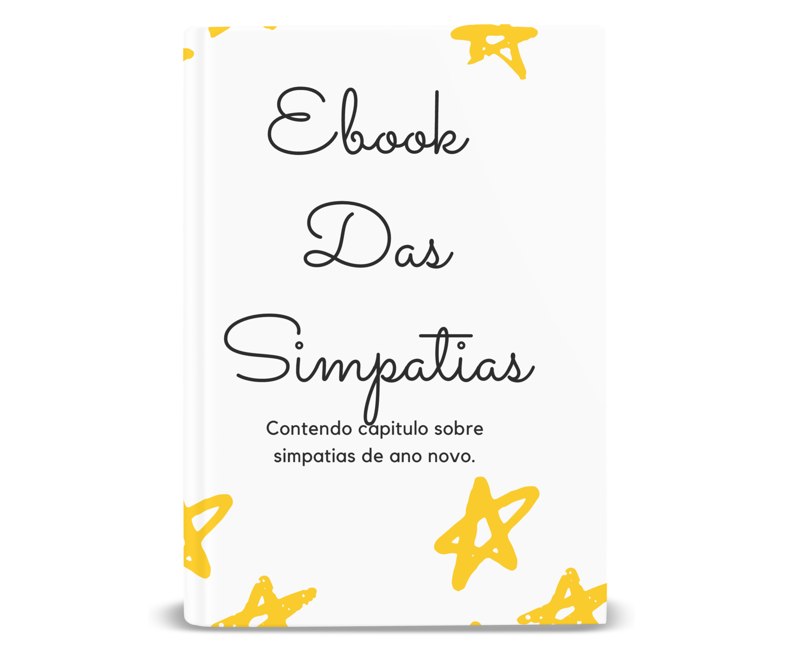
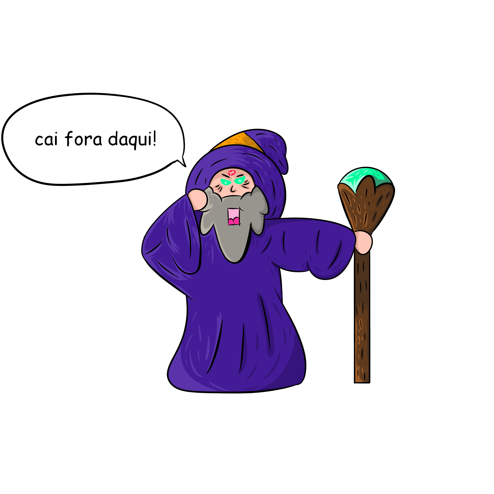
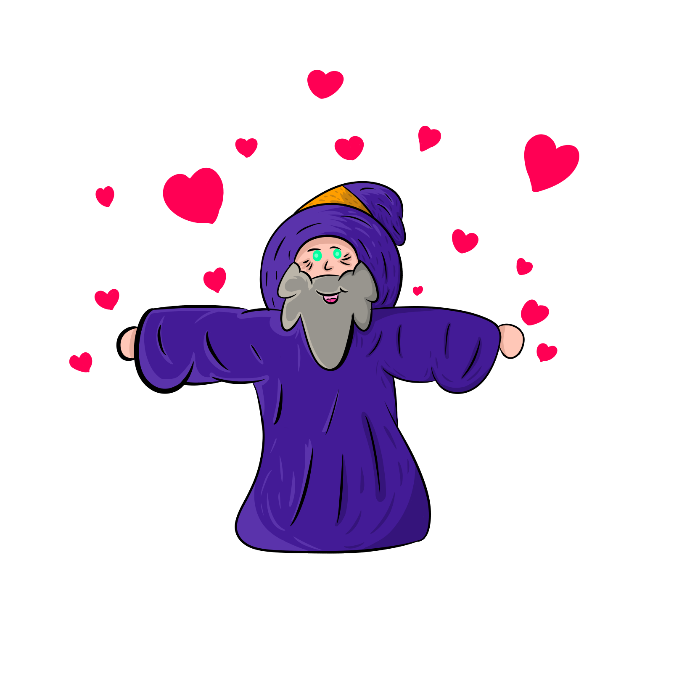

ATENÇÃO: Veja Agora as Simpatias ÚNICAS e SELECIONADAS que Eu Uso para DESTRUIR o AZAR e ATRAIR SORTE na minha vida!
DESCUBRA como eu fiz para encontrar e selecionar as melhores simpatias, depois de PERDER MUITO TEMPO fazendo pesquisas no google e youtube e não encontrar aquilo que eu buscava.
Como Tudo Aconteceu!
Eu Usei as Simpatias Para Mudar Minha Vida...
mas não foi fácil demorei muito tempo até descobrir as simpatias certas,
foi difícil, eu fico até sem graça...
Você não tem ideia do que eu já passei na vida...
chorei muito pela situação que eu vivia... Sem saber como sair!
Vim de uma família humilde, eu era a ilustração da derrota.
Justamente por ter passado muito sufoco, eu aprendi a não desistir, a encarar de frente, e seguir em frente.
Foram anos de decepção, eu era visto como perdedor pela minha família, não tinha sorte na vida era só azar e ficava cada vez mais frustrado.
... Até que um dia minha avó me ensinou uma simpatia que literalmente me salvou, minha família e todos ao meu redor!
E de lá pra cá eu passei a selecionar e compilar as melhores simpatias que eu encontrei.
Agora vou te falar...
O Ebook das Simpatias é o Mais Indicado Para Qualquer Pessoa Que Acredita em Simpatias e Que Quer Atrair Sorte para sua Vida!!!
- 100% Prático O ebook das simpatias, é um livro com conteúdo direto e rápido sem enrolação.
- Foco em Resultados O único foco está em seus resultados o mais rápido que poderia ser.
- 100% Completo São sete capitulos abordando vairos tipos de simpatias.
- Dinheiro Um capitulo inteiro sobre como atrair dinheiro.
- Dividas Temos um capitulo inteiror como afastar as dividas.
- Ano novo Um capitulo bonus sobre simpatias de ano novo.
- 100% Atualizado Nada de simpatias com nota de um real e cruzado.
- pode ler pelo celular ou tablet.
- pode ler pelo computador.
- leia nas horas vagas.
- Acesso Imediato ao ebook.
- seu por tempo ilimitado.
- simpatias passo a passo.
- Conteúdo 100% Atualizado.
- traz autoconhecimento;
- limpeza de energias;
- alcance com mais facilidade o que almeja;
- atraia bons momentos;
- atraia boa energia para seu campo de vibrações;
- intensifica o amor;
- aumenta a fé;
- traz proteção;
- afasta situações negativas;
- renova a aura;
- traz sorte;
- afasta o azar;
- afasta energias negativas;
- elimina o mau olhado;
- São mais de 130 Simpatias selecionadas;
- sem enrolação conteúdo direto;
- livro bem diagramado;
- designer limpo e minimalista;
- abordagem leve e descontraída;
- uma pitada de humor (até porque ninguém é de ferro);
- feito com muito amor carinho fé e respeito;
- preço justo e acessível;
- simpatias leves da cultura popular brasileira, nada de magia negra;
Garantido!Independente da sua situação, o Ebook das Simpatias é SIM Para Você!
... não é necessário nenhum conhecimento prévio, nenhum tipo de experiência, nada.
A primeira simpatia que eu aprendi foi com a minha avó.
De lá pra cá eu me dediquei a selecionar as melhores simpatias para melhorar a minha vida;
cada problema, cada dificuldade, cada tempo perdido, passei por tudo isso...
Acesso Imediato a Tudo
O Ebook das Simpatias Está Totalmente Atualizado com o que Existe de Melhor das Simpatias. Você vai descobrir as melhores simpatias para turbinar sua vida espiritual! Veja Abaixo O que Você Vai Ter Acesso Imediato com o Ebook das Simpatias ...Apenas um "pedacinho" do conteúdo(é muito completo para descrever tudo)... O Ebook das Simpatias é 100% completo, 100% diferenciado, 100% acima do mercado... Eu com o ebook das simpatias tenho como único objetivo te levar passo a passo em todos os detalhes para você ganhar aquela força espiritual do universo... ... com isso mudar sua vida(assim como mudei a minha). ... também fazer você poupar tempo fazendo pesquisas inúteis na internet.
... claro, tudo isso do conforto da sua casa. ... sair desse ritmo de azar atual. E pra isso vou te ensinar as melhores simpatias que existe! Um livro completo com 7 capítulos cada um tratando de tema específico, você vai aprender várias simpatias com um tom bem humorado e sem enrolação; descomplicado direto e rápido sem enrolação;
Com um capítulo inteiro sobre dinheiro e suas simpatias, para encher o seu bolso. Um capítulo sobre simpatias de sorte e prosperidade, para espantar o azar da sua vida. Um capítulo sobre simpatias de comércio e negócios, para dar aquela moral nos empreendimentos. Um capítulo sobre simpatias de trabalho e emprego, para levantar sua vida profissional. Um capítulo sobre simpatias de dívidas, para tirar o seu pé do buraco. Um capítulo sobre simpatias de loteria, para te ajudar a fazer aquela fezinha. E um capítulo bônus sobre simpatias de ano novo, para deixar tudo de ruin no passado e atrair boas energias para o novo ano.
Atenção:
Para quem é o Ebook das Simpatias:
As simpatias são para qualquer pessoa que tem fé nas forças espirituais e acredita no poder delas. veja uma lista de benefícios das simpatias:
Atenção:
Para quem não é o Ebook das Simpatias:
Aquelas pessoas que não acreditam em simpatias, pessoas que não acreditam no mundo espiritual, aquelas pessoas que acham que sorte e azar não existem, para pessoas arrogantes de coração ruins e impuros, o Ebook das Simpatias não é para esses tipos de pessoas.
Por que o Ebook das Simpatias é diferenciado:
São sete capítulos com as melhores simpatias!!! Um livro 100% digital você compra e recebe ele no momento exato da compra! São mais de 130 Simpatias!!!
clique nesse botão que está aí embaixo agora mesmo que eu vou te mostrar como esse fantástico ebook vai mudar sua vida, vai abrir as portas do tremendo sucesso que você tanto merece:
Preço original:
Nessa oferta por apenas:
à vista R$50
Não se esqueça do Super capítulo BÔNUS Imperdível um capítulo inteiro só de Simpatias de Ano Novo.
Esse é um capítulo que várias pessoas estavam pedindo... Como usar todo o potencial do Réveillon para começar um ano transformador. Vou te mostrar como potencializar a sua sorte e destruir o seu azar com simpatias na virada do ano...
Claro que pode parecer exagero, mas... De coração, escrevi esse livro com muito amor e dedicação! Meu esforço é focado em fazer você obter uma ajuda do universo. Te garanto... sua vida vai muda! Vamos? 